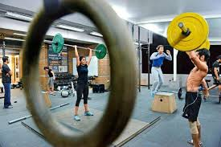

#fitnesscare
#gymlifting
#suddenevents
The clubs give you the chance to apply classroom learning to the outside world. This helps you to gain invaluable leadership as well as life skills. In addition to connecting you with other students who have similar interests, professional clubs are a platform for students to interact with alumni and professionals in their fields of interest. This helps you to build formal and informal networks while exploring career opportunities. For developments in career interests and goals, you can be part of the professional clubs. To shape personal interests and hobbies, you can engage in one of the many social clubs here. Membership in the clubs will help you gain invaluable leadership, social and personal skills.